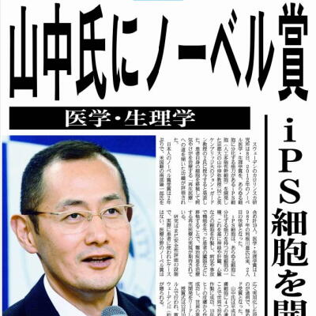
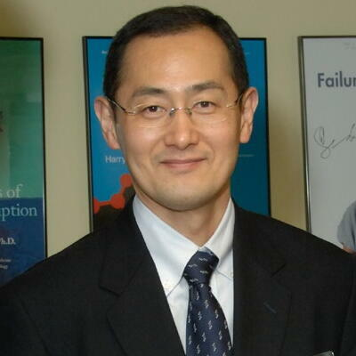

山中伸弥の紹介


 プロフィール
プロフィール
大阪府枚岡市（現・東大阪市）出身の日本の医学者。京都大学iPS細胞研究所所長・教授、日本学士院会員。学位は博士（医学）。その他称号としては京都市名誉市民、東大阪市名誉市民など。カリフォルニア大学サンフランシスコ校グラッドストーン研究所上級研究員、奈良先端科学技術大学院大学栄誉教授。文化勲章受章者。「成熟細胞が初期化され多能性をもつことの発見」により2012年のノーベル生理学・医学賞をジョン・ガードンと共同受賞した。
彼から、クリエイターを目指す君へのメッセージ
「高く飛ぶためには思いっきり低くかがむ必要があるのです。」
「何度も読んだのは『仕事は楽しいかね？』（きこ書房）です。（中略）結局、この本のタイトルの通り、仕事も楽しむしかないのかなと思っています。」
「やるかやらないかの選択を迫られたとき、やらなくて後悔するくらいなら、やってから後悔しようといったメッセージには、とても共感しました。新しいチャレンジをすると、とりあえずがんばろうと思えますが、チャレンジをやめるとそこから先へ進むことは決してできないからです。いまでも新しいチャレンジをするように心がけています。」
「研修期間の二年間ずっと「ジャマナカ」です。「お前はほんまに邪魔や。ジャマナカや」といわれつづけました。（中略）しかし、ここで壁にぶつかったことが、研究者という新しい道につながったのです。」
「面接の最後、やぶれかぶれ正直に、「ぼくは薬理のことはなにもわかりません。でも、研究したいんです！ 通してください！」って声を張ったんです。だいぶ後になってこのときの面接の先生から「あのとき叫ばへんかったら落としてたよ」といわれました。」
「研究をやめかけた時、奈良先端科学技術大学院大に拾ってもらい、一度死にかけたんだから何か面白い難しいことをやろうと思った。それも良かった。僕の大胆な思いつきにもかかわらず、研究室の人たちが本当に一生懸命実験をしてくれた。それぞれがたまたま１カ所でクロスした。それがなかったらｉＰＳ細胞はいまだに、少なくとも僕のところではできていないと思います。」
「研究というのはアイデアひとつ、努力で色々なものが生み出せる。日本は天然資源が限られている現実があるが、研究成果は無限に生み出せる。それが国の非常に大きな力にもなるし、病気で苦しんでおられる方の役にも立つ。一人でも多くの方が研究に参加してほしい。そのような人が安心して研究できるような環境を、私たちがさらにつくっていきたい。それに微力ながら貢献したい」
「僕は基本的に飽きやすい性格で、すぐに新しいことをしたくなってしまう。今までは、好きなことをやっていたらいい、僕の人生や、という感じだったんですけど、ｉＰＳ細胞と出会ってからはそうはいかない。当面は、自分の「子ども」であるこの技術を守り、ちゃんと成人するまで育てていきたいと思います。」
「研究は、最初から社会の役に立つようにしようと意識しすぎると、浅いものになりがちです。みんなが実用化間近の研究ばかりやりだすと、将来のイノベーションの芽が摘まれてしまいます。」
「研究者は役に立つかわからないものを研究すべきだし、科学研究費助成事業（科研費）のように、海のものとも山のものともつかない研究を支援する仕組みが、国全体の技術力を維持するうえで非常に大切です。」
「私は、本当に誰もやっていないことだったら、どんな研究でも価値があると思っています。だからこそ、若い研究者には、誰かの真似ではないか、繰り返しではないか意識してもらいたいのです。本当のイノベーションは未知の領域でしか見つからないのです。」
「仕事だけしていると、効率が悪くなると思います。飽きて集中力が落ちますから。ときどき仕事とはまったく関係ないことに没頭したほうが気分転換になるんですよ。」